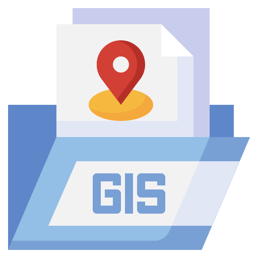

設立宗旨

-
地理資訊系統研究中心之設立目的乃在整合
-

遙感探測
(Remote Sensing; RS)
遙感探測
(Remote Sensing; RS)
所謂遙感探測(Remote Sensing RS)，係指透過某一特定的工具，如飛機(Aircraft)或衛星(Satellites) 上之感測器系統，自一段觀測距離，末直接接觸物體，以記錄和檢測資料的方式蒐集地球表面的資料和接近地表的環境資料，而獲取地球表面環境資料的技術。這些資料經過整理、分析，轉換成為用於了解、經營和管理自然與人文環境的參考資訊。
-
 地理資訊系統
(Geographic Information Systems;GIS)
地理資訊系統
(Geographic Information Systems;GIS)
為一套運用電腦軟、硬體設備，輔助使用者處理數值化地理資料的資訊系統。 為處理龐大的地理空間資料，而設計的一套資訊管理與應用系統。 將各種資料以數值化形式輸入及儲存於電腦中，建立資料庫，可隨時擷取或更新資料，並可配合使用目標作適當的處理與分析，以作為各項規劃、管理與決策的考量。 -
全球衛星定位系統
(Global Positioning Systems; GPS)
全球衛星定位系統
(Global Positioning Systems; GPS)
GPS衛星於太空中運轉時，不斷向地面發射衛星訊號，地面使用者則使用衛星接收儀接收來自衛星之各種衛星訊號，並利用各種不同訊號特性，求得衛星與地面接收儀間之距離及地面各接收儀間之基線向量，再配合幾何原理求出接收儀所在地位置，以完成導航定位及各種測量作業。 -
地文與水文分析
(geomorphologic and hydrological analysis)
地文與水文分析
(geomorphologic and hydrological analysis)
水文分析用於輔助使用者建立地表逕流模型。配合數值高程模型，可單獨或依序使用此模組分析了解某個區域中水的流動方式、水流方向、累積流量或區域內發生哪些變化會對水流產生影響等，作為相關進階應用（區域規劃、農業、林業）的基礎。 -
人工智慧
(ArtificialIntelligence, AI)
人工智慧
(ArtificialIntelligence, AI)
人工智慧是打造電腦與機器的科學領域，這些電腦和機器可以進行推論、學習以及採取行動，而這類行動原本需要人類智慧判斷或涉及超出人為分析能力上限的資料規模。 AI 是一個廣泛版圖，包含許多不同的專業領域，包括電腦科學、資料分析與統計資料、硬體與軟體工程、語言學、神經科學，甚至是哲學和心理學。 -

新進資訊科技
(Information Technology;IT)
新進資訊科技
(Information Technology;IT)
資訊科技的研究包括科學，技術，工程以及管理等學科，這些學科在資訊的管理，傳遞和處理中的應用，相關的軟體和裝置及其相互作用。資訊科技的應用包括電腦硬體和軟體，網路和通訊技術，應用軟體開發工具等。電腦和網際網路的普及以來，人們日益普遍的使用電腦來生產、處理、交換和傳播各種形式的資訊
以上述技術為核心，配合現代資訊技術，進行陸地與海洋農漁業資源管理，遙測技術研發，防災工程規劃，水資源分析、坡地防災分析，以及水力開發與蘊藏量分析，航運管理以及海圖繪製等技術應用及軟體開發等研究工作。
-
-
本中心主要研究重點
Ocean
海洋衛星遙測、海洋生態動力及環境變遷對漁業調適與永續發展之研究

Hydrology
河川水力學、地表水文學、流域整體治理規劃、都市防減災工程及地理資訊系統之研究。

Calculator
自動船舶辨識系統、模糊控制邏輯理論應用、地理資訊系統應用、人工智慧

Satellite
衛星通訊及軌道規劃、無線通訊系統(行動通訊、無線區域網路、衛星通訊、數位視訊及音訊廣播…等)之研究

-

本中心同時以研究、教學及技術推廣為目的
培訓地理資訊系統相關技術人員，以服務本校及校外學術與教育單位；並接受政府機關、學校、財團法人及民間業者之委託，進行地理資訊系統相關技術之研發工作，並不定期舉辦地理資訊系統推廣教育課程及短期訓練班，以推廣地理資訊系統技術應用。